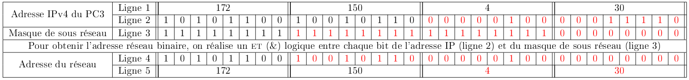

22-NSIJ1LR1 : Corrigé⚓︎
Année : 2022
Centre : Mayotte et réseau AEFE
Jour : 1
Enoncé :
Exercice 1⚓︎
structures de données (listes, piles et files)
-
a. Le
1est défilé et enfilé
b. Le1 4 3 8 2 5est dépilé et empiler (la pile reste donc dans l'état où elle se trouvait)
c. Le5 8 6 2 5est dépilé depet enfilé dansfpuis le8est dépilé depet enfilé dansf.8 5 4 3 8 2 1
d. Le6 2 1est défiler defet empiler dansppuis le2est dépilé defempilé dansp.4 3 8
2 1 5 8 6 2 Bug
A la question suivante, l'énoncé indique que la fonction
mysteremodifie la file mais ne renvoie rien. Cependant, on trouve à la fin du code demystereun returnp. Cette fonction renvoie donc une pile (qui comme nous le verrons est vide) -
Avant le premier passage
fcontient
Puis,les états de la file1 2 3 4 flors des passages successifs dans la première bouclewhileseront :- Tour 1 :
fcontient1 2 3 - Tour 2 :
fcontient1 2 - Tour 3 :
fcontient
A la fin de cette première boucle, les éléments de1 fsont empilés danspqui contient alors :
Dans la deuxième boucle1 2 3 4 whileon dépile les éléments depet on les enfile dansf: - Tour 1
fcontient1 - Tour 2
fcontient2 1 - Tour 3
fcontient3 2 1 - Tour 4
fcontient
A la fin de la seconde boucle4 3 2 1 whilela pilepest vide, cette fonction renvoie donc une pile vide.
- Tour 1 :
-
a.
f
2 1 3 2 1 3 2 3 3 2 3 1 2 3 p
3 1 1 2 1 1 b.
Bug
Cette algorithme semble conçu pour trier les éléments de la file mais ne fonctionne pas en l'état. En effet, la fonction
knuthsemble vouloir à chaque tour de la bouclefor, avoir une pileptriée. Pour cela, les éléments depsupérieurs au nouvel élément à empileredevraient être stockées dans une pile temporairep_temp, ici ces éléments sont enfilés dans la file à trierf.
Exercice 2⚓︎
structures de données (programmation objet)
-
a. On augmente l'indice
isans dépasser la longueur de la listeMoussetant qu'on ne trouve pasNone:🐍 Script Python 1 2 3 4 5 6 7 8 9 10 11 12
def donnePremierIndiceLibre(Mousse): """ Mousse est une liste. La fonction doit renvoyer l’indice du premier emplacement libre (contenant None) dans la liste Mousse ou renvoyer 6 en l’absence d’un emplacement libre dans Mousse. """ i = 0 while i < len(Mousse) and Mousse[i] != None : i = i + 1 return ib. Si un indice libre existe alors on place
Bà cet indice dansMousse:🐍 Script Python 1 2 3 4
def placeBulle(B): libre = donnePremierIndiceLibre(Mousse) if libre < len(Mousse): Mousse[libre] = B -
Les deux bulles sont en contacts si la distance les séparant est inférieur à la somme de leurs rayons.
🐍 Script Python 1 2
def bullesEnContact(B1,B2): return distanceEntreBulles(B1,B2) <= B1.rayon + B2. rayonAide
Le code ci-dessus est équivalent à :
🐍 Script Python 1 2 3 4 5
def bullesEnContact(B1,B2): if distanceEntreBulles(B1,B2) <= B1.rayon + B2: return True else: return False -
A la ligne 10, on indique que la surface de la nouvelle bulle est la somme des surfaces des deux bulles entrant en collision. Les lignes 13 et 14 divisent par 2 les deux composantes de la vitesse. Et enfin ligne 16, la petite bulle disparait donc la valeur de l'indice qu'elle occupait devient
None🐍 Script Python 1 2 3 4 5 6 7 8 9 10 11 12 13 14 15 16
def collision(indPetite, indGrosse, Mousse) : """ Absorption de la plus petite bulle d’indice indPetite par la plus grosse bulle d’indice indGrosse. Aucun test n’est réalisé sur les positions. """ # calcul du nouveau rayon de la grosse bulle surfPetite = pi*Mousse[indPetite].rayon**2 surfGrosse = pi*Mousse[indGrosse].rayon**2 surfGrosseApresCollision = surfPetite + surfGrosse rayonGrosseApresCollision = sqrt(surfGrosseApresCollision/pi) #réduction de 50% de la vitesse de la grosse bulle Mousse[indGrosse].dirx = Mousse[indGrosse].dirx/2 Mousse[indGrosse].diry = Mousse[indGrosse].diry/2 #suppression de la petite bulle dans Mousse Mousse[indPetite] = NoneAide
On rappelle que la surface d'un disque de rayon \(r\) est \(\pi\,r^2\)
Bug
- Le rayon de la grosse bulle est modifié lors d'une collision, on devrait donc trouver dans le code de la fonction
collisionla ligneMousse[indGrosse].rayon = rayonGrosseApresCollision. - Dans les paramètres d'appel
mousseest en minuscule dans l'énoncé. - Des espaces superflus figurent dans l'énoncé (par exemple entre
Mousseet[indPetite]), on les a supprimé dans la correction pour respecter la notation usuelle de Python.
- Le rayon de la grosse bulle est modifié lors d'une collision, on devrait donc trouver dans le code de la fonction
Exercice 3⚓︎
bases de données relationnelles et langage SQL
-
a. Cette requête retourne les
titrede la tableqcmdont la date est après le 10/01/2022. C'est à dire :titre poo Arbre Parcours b.
🗂️ Requête SQLSELECT note FROM lien_eleve_qcm WHERE ideleve = 4; -
a. Le couple
(ideleve,idqcm)est la clé primaire de la tablelien_eleve_qcm, or une clé primaire est unique et donc deux enregistrements dans cette table ne peuvent avoir les mêmes valeurs pour le couple(ideleve,idqcm)c'est à dire qu'un même élève ne peut pas avoir fait deux fois le même qcm.b. La table
lien_eleve_qcmest modifiée, on doit y ajouter l'enregistremen(4,2,18)car l'idelevede Marty Mael est 4, qu'il a fait leqcmd'idqcm2 et qu'il a eu la note de 18.c.
🗂️ Requête SQLINSERT INTO eleves VALUES (6,"Lefèvre","Kevin")d.
🗂️ Requête SQLDELETE FROM lien_eleve_qcm WHERE ideleve=2 -
a.
🗂️ Requête SQLSELECT nom, prenom FROM eleves JOIN lien_eleve_qcm ON eleves.ideleve = lien_eleve_qcm.ideleve WHERE idqcm = 4b. Le résultat de cette requête sera :
nom prenom Marty Mael Bikila Abebe Note
On a supposé l'élève Dubois Thomas ne figure plus dans la base suite à la requête de la question 2.d. Dans le cas contraire, il faudrait le rajouter au résultat précédent.
4.
SELECT eleves.nom, eleves.prenom, lien_eleve_qcm.note FROM eleves
JOIN lien_eleve_qcm ON eleves.ideleve = lien_eleve_qcm.ideleve
JOIN qcm ON qcm.idqcm = lien_eleve_qcm.idqcm
WHERE qcm.titre = "Arbre Binaire"
Exercice 4⚓︎
algorithmique (arbres binaires en profondeurs préfixe et infixe)
-
a. Un arbre binaire est un arbre d'arité 2, c'est à dire un arbre dans lequel chaque noeud possède au plus deux fils. C'est bien le cas ici, une personne ayant au maximum deux parents connus.
b. Dans un arbre binaire de recherche, on dispose d'une relation d'ordre entre les clés associées à chaque noeud et pour tout noeud, sa clé est supérieure aux clés du sous arbre gauche et inférieure aux clés du sous arbre droit. Ici les clés sont des personnes sur lesquelles on n'a pas de relation d'ordre.
-
a. On rappelle que dans un parcours en profondeur préfixe, on liste en premier la racine puis récursivement les clés du sous arbre gauche et du sous arbre droit. Ce qui donne ici :
Albert Normand Jules Normand Michel Normand Jules Normand Odile Picard Hélène Breton Evariste Bretonb. Dans le parcours en profondeur infixe, on liste récursivement les clés du sag puis la racine puis les clés du sad. Ce qui donne ici : Jules Normand Michel Normand Odile Picard Jules Normand Evariste Breton Hélène Breton Camélia Charentais
c. En parcours prefixe on insère l'affichage du tuple
(prenom,nom)avant de relancer les parcours récursifs sur les deux sous arbres.🐍 Script Pythondef parcours(racine_de_l_arbre) : if racine_de_l_arbre != None : noeud_actuel = racine_de_l_arbre print(noeud_actuel.identite) parcours(noeud_actuel.gauche) parcours(noeud_actuel.droite)d. En parcours infixe on insère l'affichage du tuple
(prenom,nom)entre les parcours récursifs sur les deux sous arbres.🐍 Script Pythondef parcours(racine_de_l_arbre) : if racine_de_l_arbre != None : noeud_actuel = racine_de_l_arbre parcours(noeud_actuel.gauche) print(noeud_actuel.identite) parcours(noeud_actuel.droite) -
a.
🐍 Script Pythonclass Noeud() : def __init__(self, prenom, nom) : self.identite = (prenom, nom) self.gauche = None self.droite = None self.generation = 0Bug
Dans l'énoncé,
selfne figure pas dans les paramètres de__init__(ajouté dans cette correction)b.
🐍 Script Pythondef numerotation(racine_de_l_arbre, num_gen=0) : if racine_de_l_arbre != None: racine_de_l_arbre.generation = num_gen numerotation(racine_de_l_arbre.gauche,num_gen+1) numerotation(racine_de_l_arbre.droit,num_gen+1) -
Cette fonction parcourt l'arbre en préfixe mais affiche seulement les noeuds droit, ce qui donne : Odile Picard Hélène Breton Camélia Charentais Marie Comtois Eulalie Lorrain Gabrielle Savoyard Janet Chesterfield
Exercice 5⚓︎
réseau, protocoles de routage, langage et programmation
-
a. Un adresse IPv4 se compose de 4 octects.
b. Le PC3 a pour adresse IPv4 : 172.150.4.30/24 le masque de sous réseau est donc 11111111.11111111.11111111.00000000 c'est à dire 255.255.255.0
-
Tableau complété : 
Aide
- Exemple de la conversion binaire décimal : \(150=\)\(\overset{\displaystyle{_{2^7}}}{\boxed{\strut1}}\overset{\displaystyle{_{2^6}}}{\boxed{\strut0}}\overset{\displaystyle{_{2^5}}}{\boxed{\strut0}}\overset{\displaystyle{_{2^4}}}{\boxed{\strut1}}\overset{\displaystyle{_{2^3}}}{\boxed{\strut0}}\overset{\displaystyle{_{2^2}}}{\boxed{\strut1}}\overset{\displaystyle{_{2^1}}}{\boxed{\strut1}}\overset{\displaystyle{_{2^0}}}{\boxed{\strut0}}\)
- On rappelle qu'un & logique vaut 1 uniquement lorsque les deux entrées valent 1.
-
a. L'adresse
172.150.10.257n'est pas valide (le dernier chiffre n'est pas entre0et255). L'adresse172.154.4.30ne fait pas partie du réseau (ne commence pas par172.150.4) L'adresse172.150.4.0est celle du réseau. Et enfin, *172.150.4.10est déjà utilisée. Pour un nouvelle ordinateur on peut donc utiliser :172.150.4.11172.150.4.200
b. Pour connaître l'adresse IP, on peut utiliser la commande
ifconfig(système Linux) ouipconfig(Windows). -
Les machines sont sur des réseaux différents (
172.16.1.10\16d'un côté et192.168.5.10\16de l'autre) un switch ne permet donc pas de les relier. Pour que cela fonctionne, il faudrait changer la configuration de toutes les machines d'un des sous réseau. L'alternative est d'utiliser un routeur qui permet d'interconnecter les deux sous réseau en conservant leur configuration. -
🐍 Script Python
def adresse(adresse,liste_ip): if adresse not in liste_ip: liste_ip.append(adresse) print("pas trouvée, ajoutée") else: print("trouvée")